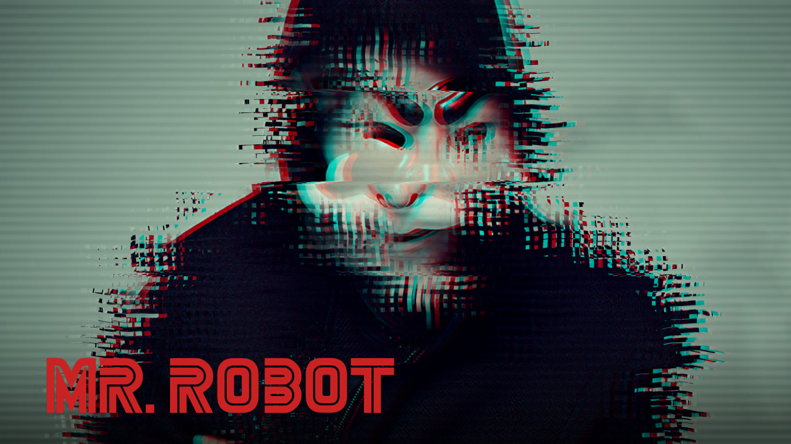
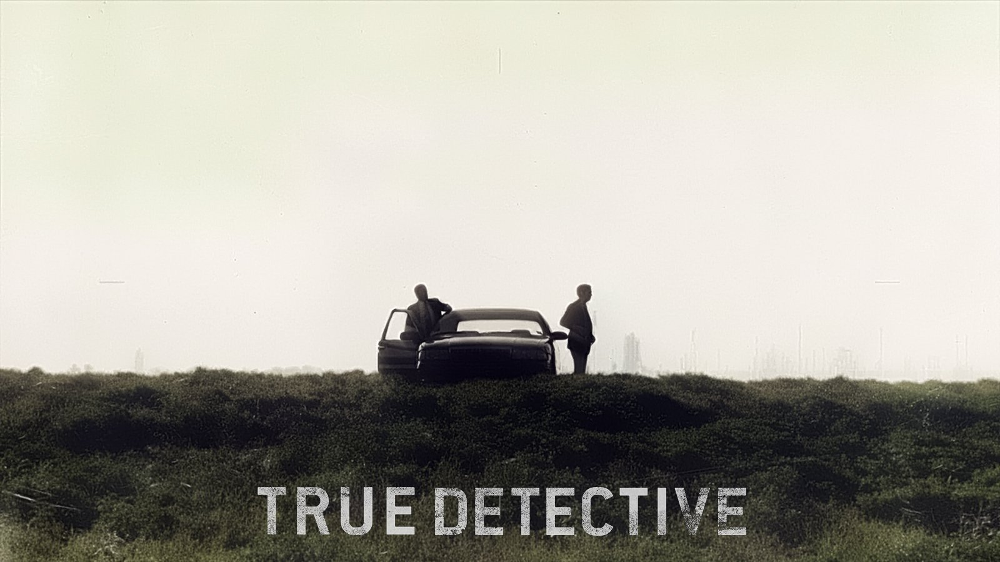
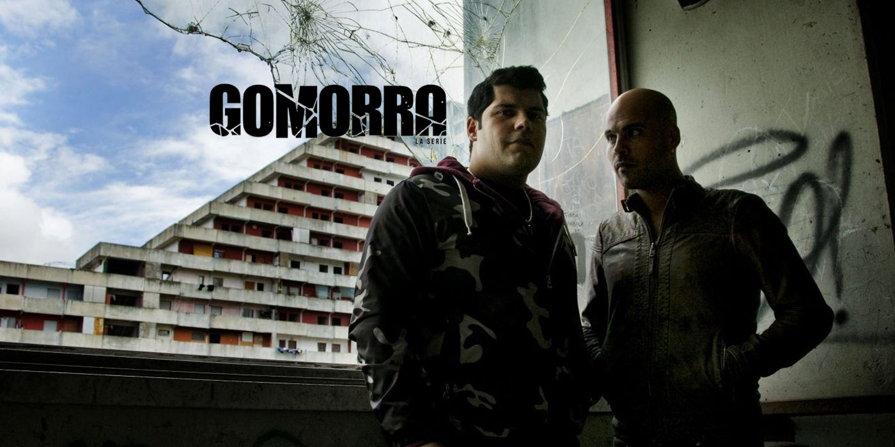

D e s c r i f i l m
Séries

Le hacking a déjà été visité de maintes fois dans le cinéma mais cette fois-ci c'est avec une qualité encore jamais atteinte. Comme pour Fight Club la camera est subjective, et de plus vous faites partie de la série car vous êtes comme un confident du héros. Ce héros a une personnalité très complexe qui va faire rebondir le scénario à plusieurs reprise donc si la psychologie vous intéresse vous serez comblé. Un point de vue politique est cependant très clairement adopté mais il est intrisèque au fait même que la série parle de hacking et du monde Internet. Des références culturelles sont rangées partout sur de multiples plans. Pour comprendre la série dans toute sa profondeur il faut carrément enquêter sur elle, un peu comme un hackeur le ferait sur vous.

Un prof de chimie bien sage du genre Ned Flanders a un cancer. Il réalise qu'il est en vie et devient petit à petit un homme dangereux et sûr de lui. Méchant ou héroïque, à vous de voir, en tout cas vous l'aimerez. Et que dire de son acolyte, son anti-lui que vous aimerez également.

Une série policière, deux détéctives reviennent sur ce qu'ils n'ont pas réussi à élucider, l'un est un type normal, l'autre est un peu particulier, leurs personnalité et l'ambiance de la série font naître quelque chose de très singulier qu'on ne trouve pas si souvent dans des histoires policières.

En France on ne connait pas beaucoup cette série mais en Italie elle change la vie des gens. D'abord un livre puis un film puis cette série. Fruit d'un travail journalistique immense sur la camorra napolitaine, elle renseigne sur les coutûmes et les pratiques de cette mafia. Il n'y a pas de héroïsme, simplement la dure réalité de Naples qui vous prend le cerveau. Ce n'est pas un documentaire, c'est une série avec des personnages et une histoire.
copyright 2016-2017